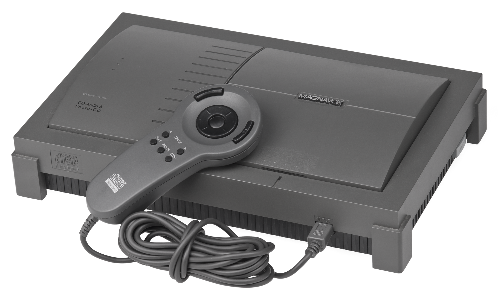
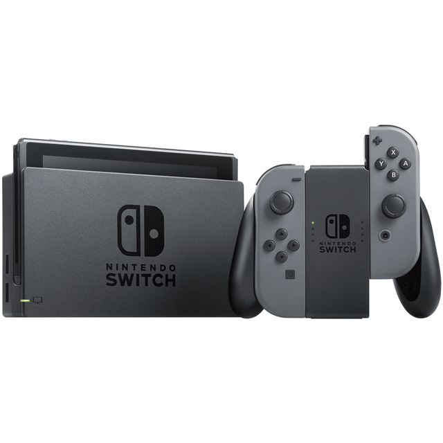

Nintendo
Y Los
Videojuegos
a traves de
la Historia
Autores: Adrian Garcia y Sofia Lopez
Para empezar
Primero debes escoger el camino que quieres recorrer...
It's dangerous to go alone, take this
1980 a 1990

It's a me, Mario
1990 a 2000

Touching is good
2000 a 2006

You say you want a Revolution?
2006 a 2016

Actualidad
2016...

Par favar! Quiero verlo todo!
De 1980 al 1990
Los inicios
Situación previa del mercado
Escogemos esta época como etapa inicial porque partimos del primer desarrollo
más importante de la compañía. Existian previamente a la irrupción de Nintendo en el mercado equipos domésticos
y consolas simples que permitían en un principio jugar a juegos como Pong, como la Magnavox Odyssey del año 1972.
Posteriormente Atari, con la Atari 2600 dominó el mercado doméstico, de esa época tenemos juegos míticos como Pac-man, Pitfall, Space Invaders,
Frogger o algunos más infames como el juego de ET, el cual se cree que marcó un antes y después
en el mercado de las consolas y provocó lo que se conoció como la "crisis de los videojuegos en Norteamerica" en el año 1983.
Nintendo irrumpe en el mercado
Ahora que ya hemos sentado las bases de la situación del mercado en la época, hablemos de Nintendo. La compañía comenzó fabricando naipes y barajas de cartas en el año 1889. Posteriormente evoluciona hasta que en el año 1963 comienza a vender juegos sencillos como los juegos de mesa de shogi, go o mahjong. Esta diversificación del negocio hizo que la empresa siguiera creciendo tras caer la venta de los juegos de cartas.Con el lanzamiento de la Magnavox Odyssey el fenómeno de las consolas domésticas se extendió a Japón donde Nintendo vio una oportunida de seguir diversificando su negocio asi que en colaboración con Mitsubishi Electric y Ricoh lanzó la que sería su primera consola, la Color TV Game en el año 1977. Esta consola era una más de las llamadas "consolas de Pong" aunque ofrecía mas variedades de Pong que la competencia y gráficos a color.
Tras el exito que se iba perfilando de este mercado, Nintendo lanzó el que sería su primer videojuego, un arcade de Othello en el año 1978, al que siguieron más como Block Fever, Sheriff, Monkey Magic, etc. Nintendo intentó competir con el exito de Space Invaders, que fue lanzado en ese año, pero no compró la licencia del juego como hizo en el caso del Pong. Intentó desarrollar una versión propia lo que la llevó a tener un conflicto judicial con Taito, desarrolladora de Space Invaders, que no le afectó por la inexistente legislación en aquel momento en el campo de los videojuegos. Nintendo continuó desarrollando juegos de arcade en esta época, algunos de los títulos más famosos, como Donkey Kong o Mario. También empezó el desarrollo de las consolas portátiles con la Nintendo Game & Watch. Estas consolas aportaron un elemento presente en todos los controles actuales, el pad direccional para los juegos en 2D.
Nintendo Family Computer(Famicom) o Nintendo Entertainment System
Como Nintendo ya se había asentado en este inicio del mercado de los videojuegos decidieron ir más allá y pensaron en un dispositivo que sobrepasase las arcades o la Game & Watch que solo permitían utilizar un juego. De esta idea surgió la Nintendo Family Computer, que fue lanzada en Japón en el año 1983, con tres juegos como catálogo inicial (Donkey Kong, Donkey Kong Jr. y Popeye). Nintendo empezó ya en esta época a competir contra la que sería su gran adversaria en los inicios del mercado de los videojuegos, SEGA y su SG-1000, que pese a todo no supusieron un impacto en las ventas de la Famicom.Como Nintendo ya dominaba el mercado local, decidió expandirse y probar suerte en el mercado americano. Para ello se puso en contacto con Atari, la cual ya contaba con experiencia en este mercado y le sugirió a Nintendo una serie de cambios sobre la consola antes de lanzarla en este mercado. Tras una serie de desencuentros, que se sucedieron en el contexto de la crisis de los videojuegos del 1983, Nintendo rompió las negociaciones con Atari y decidió sacar por sus propios medios la Famicom en el mercado americano. Así es como, tras realizar unos cambios en la consola, salió al mercadon en el año 1986 la Nintendo Entertainment System o NES. Este nombre se mantendría también para su lanzamiento en Europa. De esta época tenemos juegos y el inicio de sagas tan famosas como Super Mario Bros., The Legend of Zelda, Metroid y Mega Man.
Antes de acabar la década Nintendo puso a la venta su nueva consola portatil, la Nintendo Game Boy, que fué un éxito de ventas llegando a tener el 85% de cuota de mercado, con lo que barrió a la competencia, que con propuestas como la Atari Lynx o la Sega Game Gear no llegaron a suponer un problema para la Game Boy ya que tenían un precio elevado y consumían muchas pilas. Algunos de los títulos del catalogo inicial de la Game Boy ayudaron a potenciar más las ventas, como Super Mario Land o Tetris.


De 1990 al 2000
Ventas de Nintendo, Sega y Sony a nivel mundial
Aquí podemos ver como Nintendo domina al inicio de la década el mercado con la NES y la Game Boy asentadas en el mercado y el lanzamiento de la Game Boy en Europa. SEGA aumenta su volumen de ventas gracias al lanzamiento de su consola de 16 bits, la SEGA Mega Drive junto a su gran lanzamiento de la década, Sonic The Hedgehog, que supuso una revolución en el género de las plataformas. Podemos observar como Nintendo sigue manteniendose como líder gracias al posterior lanzamiento de la Super Famicom o Super Nintendo, que podemos ver en el año 1992, año en el que salió en Europa y que contó con el lanzamiento de The Legend of Zelda: A Link to the Past, Kirby's Dream Land, Mario Paint y Super Mario Kart. En el año 1994 entra un nuevo competidor en el mercado, Sony, con su PlayStation llega a amenazar la posición dominante de Nintendo en el mercado gracias a sus innovadores juegos en formato CD que permiten incluir video, sonido de mayor calidad y un gran catálogo nutrido por múltiples compañías.En el año 1996 Nintendo lanza su nueva consola, la Nintendo 64, que junto con el Super Mario 64 y el lanzamiento de los juegos de Pokemon hacen que sus ventas se disparen. No obstante Sony va ganando terreno poco a poco y en el año 1997 llega a superar a Nintendo, en este año destaca el lanzamiento de Castlevania Symphony of the Night y Tekken 3 para la PlayStation.Hacia finales de la década las ventas van descendiendo a la espera de una nueva generación de consolas aunque repuntan con algunos títulos destacables como Ape Escape y Tomb Raider: The Last Revelation para la PlayStation y Mario Party, Super Smash Bros., Pokemon Stadium y Donkey Kong 64.
Dominio del mercado, bit wars y un competidor nuevo
Dominio del mercado
Nintendo dominaba el mercado con la NES y su Game Boy pero la eterna rival SEGA intentó cambiar la situación lanzando la SEGA Mega Drive, una consola
de 16 bits que dejaba desfasada la NES de 8 bits. Nintendo respondió a esto con el desarrollo y posterior publicación de la Super Famicom en el año 1990.
En esta época hubo una fuerte competencia entre las dos compañías con agresivas campañas de publicidad, lo que se denominó "Bit wars". Al final Nintendo
consiguió hacerse con el mercado y su SNES vendió más de 49 millones de unidades a nivel mundial.
Algunos de los títulos más destacados de esta época son Super Mario World, Super Mario Kart, Street Fighter 2, The Legend of Zelda: A Link to the Past,
Starfox, Mario Paint, Donkey Kong Country.

Un nuevo competidor
Tras el éxito cosechado por la SNES, Nintendo se enfocó en desarrollar una nueva consola que fuese revolucionaria, con el objetivo de seguir innovando y
mantener su posición dominante en el mercado. Esto le llevó al inicio de varios proyectos, como una consola que utilizase una unidad de CD y una consola con capacidad
de gráficos en 3D. En un principio Nintendo se había asociado con Sony para el desarrollo de una unidad óptica, pero tras unas negociaciones en las que Nintendo consideró
que concedía demasiados derechos a Sony, con la consecuente pérdida de beneficios, Nintendo negoció con un nuevo socio, que sería Philips y "traicionó" a Sony.
De estos proyectos surgieron la Philips CD-i, la PlayStation de Sony, que se convertiría en su principal competidor en el mercado de los videojuegos,
y la Virtual Boy, que supuso el primer gran fracaso de Nintendo.


Nintendo 64 vs PlayStation
El fracaso del proyecto de la unidad óptica retraso el lanzamiento de la Nintendo 64 hasta el año 1996, que contaba con grandes innovaciones respecto a la competencia
como sus accesorios, sus mandos con vibración y joystick direccional para entornos 3D y 4 puertos de mandos para soportar hasta 4 jugadores. Pese a estas diferencias
respecto a la competencia, el hecho de salir tarde al mercado respecto a la PlayStation, que salió en el 1994, y seguir utilizando cartuchos en lugar de CD hizo que perdiera
cuota de mercado puesto que algunos juegos, que estaban pensados para la Nintendo 64, acabaron en el catálogo de PlayStation porque no cabían en un cartucho, como Final Fantasy VII.
Esta época nos brindó algunos títulos muy famosos como Super Mario 64, The Legend of Zelda: Ocarina of Time, Donkey Kong 64, Goldeneye 007, Super Smash Bros. y F-Zero X.

Ventas por genero de:
1. Seleccione el desarrolador:
Nintendo Sega Sony
2. Seleccione el género que quiere visualizar:
Aquí podemos ver la evolución de los distintos géneros a lo largo de esta década. Podemos ver como las plataformas dominan gracias a titulos de principios de la década como Super Mario World y Sonic y la tendencia continúa gracias al lanzamiento de los juegos con entornos 3D como Super Mario 64, Donkey Kong 64. El género de aventuras tiene un gran exponente en la saga Zelda, que en esta época publica algunos de sus mejores titulos como A Link to the Past y Ocarina of Time. En el plano de los juegos de lucha tenemos como máximo exponente Street Fighter 2, que con sus múltiples versiones suele copar los rankings de ventas. También surgen nuevas IPs como Tekken que parte de las recreativas y se hace un hueco gracias a la PlayStation. Es gracias a la PlayStation que vemos un gran crecimiento de los juegos RPG con títulos como Final Fantasy VII, Castlevania Symphony of the Night, la saga Persona y Dragon Quest. En el apartado de carreras tenemos algunos títulos como Mario Kart 64, F-Zero X y Diddy Kong Racing en Nintendo; la saga Gran Turismo, Wipeout, Crash Team Racing, Twisted Metal en PlayStation.
Del 2000 al 2006
Ventas de Microsoft, Nintendo, Sega y Sony a nivel mundial
En esta época podemos ver como el mercado continua evolucionando, como entran nuevos fabricantes como es el caso de Microsoft, como se desinflan otros, como es el caso de SEGA, y como Sony se afianza en el mercado desplazando a Nintendo. En esta generación la consola más vendida pasa a ser la PlayStation 2, lo cual hace que Nintendo replantee su estrategia y podemos ver el crecimiento en el año 2005 gracias al lanzamiento de la Nintendo DS en Europa y en el año 2006 gracias al lanzamiento de la Nintendo Wii.
Gamecube, Nintendo DS y dominio de PlayStation 2
Nueva generación de consolas
La nueva generación de consolas se inicia con el lanzamiento por parte de Sega de su nueva consola, la Sega Dreamcast. Esta consola buscaba competir con la
PlayStation y la Nintendo 64 y tuvo una buena acogida inicial hasta que Sony lanza la PlayStation 2 en el 2000, con lo que empezó a sufrir un declive en ventas continuado.
Nintendo alargó la vida de la Nintendo 64 hasta el año 2001, en el que lanzó su nueva consola, la Nintendo Gamecube. Esta consola dejó atrás los cartuchos, aunque
no contaba con el formato DVD que tenían las demás y la reproducción multimedia. Se apostó una vez más por un formato propio, los GOD(Gamecube Optical Disc), que eran
un formato de miniDVD. Esto hizo que la Gamecube resultase más difícil de piratear que las consolas de la competencia.
Nintendo también sacó una nueva generación
de consolas portátiles con la Game Boy Advance, que no contó con competencia en este aspecto. Sin embargo, en el ámbito de las consolas de sobremesa, Nintendo solo llegó
a conseguir un 20% de cuota de mercado, similar a la cuota conseguida por Microsoft con su Xbox, pero mucho menor que la cuota obtenida por PlayStation 2, la consola más vendida de esta generación.
La cantidad final de consolas Gamecube vendidas es cercana a los 22 millones, por detrás de Xbox y Playstation 2. Algunos títulos destacables de Nintendo en esta generación
son Metroid Prime, Super Mario Sunshine, The Legend of Zelda: The Wind Waker, Resident Evil 4 y Starfox Adventures.
El resurgir con Nintendo DS y Wii
Nintendo anunció en 2004 del desarrollo de una nueva consola, Nintendo DS. Con esta se pretendía incluir conceptos nuevos en los videojuegos, como las pantallas duales,
la pantalla táctil, reconocimiento de voz, chat integrado y multijugador inalámbrico con una única tarjeta de juego. Esta consola también incluía retrocompatibilidad con
los cartuchos de Game Boy Advance, lo que supuso un aliciente para los usuarios de Game Boy Advance que veían en esta consola la oportunidad de seguir usando sus juegos
con mejores gráficos e iluminación. La consola supuso un éxito de ventas para Nintendo, llegando a vender más de 154 millones de unidades en todo su periodo de vida y con sus distintas
versiones.
Tras este lanzamiento se anunció en 2005 la Wii, la nueva consola de Nintendo que rompía todos los esquemas de jugabilidad hasta la fecha al hacer uso de la detección de movimiento
mediante su mando, el Wii Remote. La consola se lanzó al mercado en el año 2006 y fue un éxito de ventas sin precedentes en la nueva generación de consolas, llegando a vender más de 100 millones
de unidades y aupando a Nintendo una vez más a líder del mercado de los videojuegos. Sus títulos más recordados son Wii Sports, Super Mario Galaxy, Mario Kart Wii, Wii Fit y Just Dance.

Ventas por genero de:
1. Seleccione el desarrolador:
Nintendo Sega Sony Microsoft Game Studio
2. Seleccione el género que quiere visualizar:
Podemos ver que la tendencia en los géneros se mantiene más o menos igual aunque hay un crecimiento del género de la simulación y deportes gracias a títulos como Fifa,NBA o NFL, así como Wii Sports. El género de shooter crece en esta generación por el auge de los FPS como Call of Duty, Battlefield y Medal of Honor. El género de las plataformas sigue teniendo como máximo exponente a Mario, con un declive del antiguo rival, Sonic.
Del 2006 al 2016
Ventas de Nintendo, Sega y Sony a nivel mundial
Vemos un declive de las ventas de Nintendo tras ir disminuyendo la fiebre provocada por la Wii y como se estabiliza el mercado, con un dominio de Nintendo en esta generación, seguido por Sony con su PlayStation 3 y con Microsoft por detrás con la Xbox360. Vemos un pico de ventas de la Xbox360 en el año 2010 gracias a la salida de su innovador sistema de detección de movimiento, Kinect, asi como de uno de sus grandes juegos, Halo Reach. En este periodo de tiempo vemos también como sale la nueva generación, con la Wii U en el año 2012 y hacia el final las consolas de nueva generación de la competencia, la PlayStation 4 y la Xbox One. Posteriormente Nintendo lanzaría una segunda consola en esta generación, la Nintendo Switch.
Wii, Wii U y Nintendo 3DS
Nintendo domina el principio de esta década con la Wii y la Nintendo DS, pese al avance continuado de la competencia con la PlayStation 3 y la Xbox360.
Con el objetivo de mantener este dominio del mercado Nintendo saca una revisión de su portatil estrella, la Nintendo DS, que se llamaría Nintendo 3DS.
Esta consola cuenta con tecnología para ver imágenes estereoscópicas en 3D sin necesidad de gafas, sensores de movimiento y acelerometro de tres ejes.
Superó a su predecesora en ventas en su primer año de vida, siendo lanzada al mercado en el año 2011 y contó con algunos titulos destacables como
Mario Kart 7, Super Mario 3D Land, The Legend of Zelda: Ocarina of Time 3D.
Con la idea de mantener el éxito también de su consola de sobremesa, Nintendo lanza la Wii U en 2012, que cuenta con gráficos de alta definición con los que competir
con la PlayStation 3 y la Xbox360. También incorpora un controlador completamente nuevo, un mando tipo tableta con pantalla táctil, que no entusiasmo al público por
suponer un coste más alto al incorporar esta tecnología al mando.Permitía jugar sin necesidad de un televisor,contaba con micrófono,altavoces, barra de sensores, giroscopio y
cámara frontal.
El mercado no dió su visto bueno a esta nueva consola de Nintendo, que perdió un 10% del valor de sus acciones en los dias siguientes a la presentación. Esta situación empeoró
en el año 2013 por el lanzamiento de PlayStation 4 y Xbox One. Las previsiones de ventas de Nintendo para la Wii U eran de 9 millones, pero finalmente solo se vendieron 2,72 millones de unidades.
Pese al fracaso algunos títulos que se lanzaron con esta consola ayudaron a recuperar parte de las pérdidas como Mario Kart 8, Super Mario 3D World, Bayonetta 2 y Captain Toad:Treasure Tracker.

Ventas por genero de:
1. Seleccione el desarrolador:
Nintendo Sega Sony Microsoft Game Studio
2. Seleccione el género que quiere visualizar:
Nintendo continúa manteniendo el género de plataformas por encima de otros, pese a lanzar distintas variantes de sus sagas más conocidas, como Mario Party, Mario Kart,etc. Sega lanza cada vez menos juegos nuevos y continúa con reediciones de clásicos como Sonic y una alianza impensable con Nintendo para lanzar "Mario y Sonic en los Juegos Olímpicos". Sony lanza nuevas IPs para su PlayStation 3 y PlayStation 4 con sus estudios propios como God of War 3, The Last of Us, Uncharted y KillZone. Microsoft destaca por títulos como la saga Halo y Fable desarrollados por Microsoft Studios asi como juegos que hacen uso de su cámara Kinect. También desarrollan algunos títulos muy destacables como la saga Forza Motorsport y los Third-Person-Shooter Gears of War.
Del 2016 a la actualidad
Nintendo Switch y lo que está por venir

Podría considerarse que Nintendo lidera la nueva generación de consolas con el lanzamiento de la Nintendo Switch en 2017, una consola que cambia el concepto
de portátil y sobremesa al permitir utilizarla de las dos formas gracias una dock o estación de conexión para darle salida a la TV. Se espera que Sony y Microsoft
lancen nuevas consolas para el año 2020, aunque actualmente solo se cuenta con rumores de nombres y especificaciones, estaríamos hablando de la PlayStation 5 de Sony
y la Xbox Scarlett(Anaconda) de Microsoft.
Del catálogo actual de Nintendo Switch podemos destacar títulos como The Legend of Zelda: Breath of the Wild, Super Mario Odyssey, Splatoon 2, Super Smash Bros. Ultimate,
Super Mario Party y Pokemon Let's Go,Pikachu!

The End
Tras la realización de este trabajo de documentación podemos ver la importancia de presentar los datos de una forma que resulta atractiva e interactiva para el usuario con el fin de que la navegación le resulte interesante y capte su atención. Realizar este proyecto mediante Scrollytelling nos ha hecho plantearnos como presentar unos datos de forma escalonada ayudandonos del scroll y contar una historia la mismo tiempo.